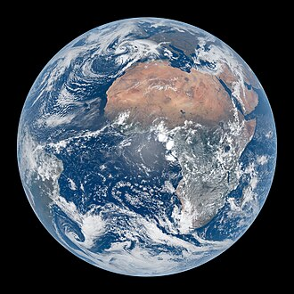
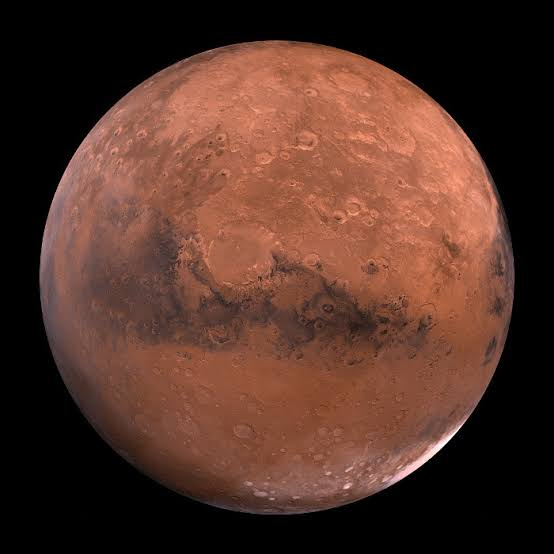
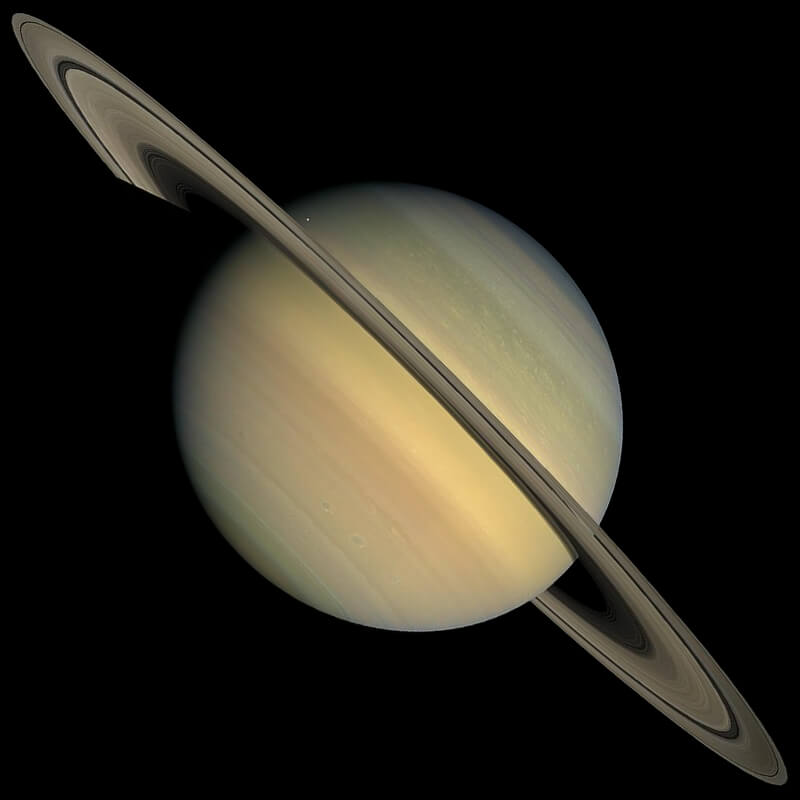
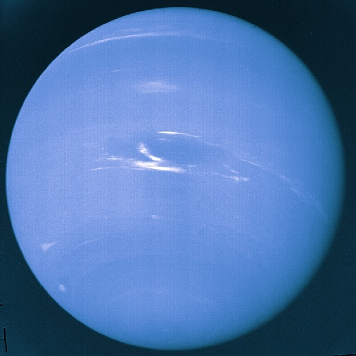

The Sun
Our Star, the center of our solar system.

Mercury
The smallest and innermost planet in the Solar System.

Venus
The second planet from the Sun, known for its thick atmosphere and extreme heat.

Earth
The third planet from the Sun and the only known planet to harbor life.

The Moon
The one and only natural satellite of Earth.

Mars
The fourth planet from the Sun, known for its red color and potential for life.

Jupiter
The largest planet in our solar system, a gas giant with a prominent Great Red Spot.

Saturn
The sixth planet from the Sun, known for its prominent ring system.

Uranus
The seventh planet from the Sun, known for its unique sideways rotation.

Neptune
The eighth planet from the Sun, known for its deep blue color and strong winds.